Chapter 9 Inferring cell types or diseases (optional)
In this section, we infer cell types for individual cells using ASURAT by inputting cell type related database such as Disease Ontology database, Cell ontology database, and possibly (but be careful using) other custom-built database (e.g., TISSUES, PanglaoDB, CellMarker, MSigDB, etc.).
ASURAT transforms normalized and centered read count tables to cell-type or functional spectrum matrix, which we term sign-by-sample matrices (SSMs). The resulting matrices can be supplied to the subsequent unsupervised clusterings.
Tips: Users should select proper databases depending on the biological context.
9.1 Add database to ASURAT objects
Load the data.
rm(list = ls())
source("R/plot.R")
source("R/function_asurat.R")
sc68_vehi <- readRDS(file = "backup/01_005_sc68_vehi_normalized.rds")
sc68_cisp <- readRDS(file = "backup/02_005_sc68_cisp_normalized.rds")
pdac_aint <- readRDS(file = "backup/07_005_pdac_aint_normalized.rds")
pbmc_4000 <- readRDS(file = "backup/10_005_pbmc_4000_normalized.rds")
pbmc_6000 <- readRDS(file = "backup/11_005_pbmc_6000_normalized.rds")
sc68_vehi_cor <- readRDS(file = "backup/01_006_sc68_vehi_correlation.rds")
sc68_cisp_cor <- readRDS(file = "backup/02_006_sc68_cisp_correlation.rds")
pdac_aint_cor <- readRDS(file = "backup/07_006_pdac_aint_correlation.rds")
pbmc_4000_cor <- readRDS(file = "backup/10_006_pbmc_4000_correlation.rds")
pbmc_6000_cor <- readRDS(file = "backup/11_006_pbmc_6000_correlation.rds")Load Disease Ontology (DO) and Cell Ontology (CO) databases, and
custom-built database, which we named CB in previous 8 section.
tidy_DO <- readRDS(file = "data/2020_001_databases/20201213_tidy_DO_human.rds")
tidy_CO <- readRDS(file = "data/2020_001_databases/20201213_tidy_CO_human.rds")
tidy_CB <- readRDS(file = "data/2020_001_databases/20210817_tidy_CB_human.rds")See that DO, CO, and CB have categories disease, cell, and cell, respectively.
Load the tables of information contents.
In the current version of ASURAT, treeTable_CO must be loaded when using
Cell Ontology database, which will be used later.
IC_DO <- readRDS(file = "data/2020_001_databases/20201213_IC_DO_human.rds")
IC_CO <- readRDS(file = "data/2020_001_databases/20201213_IC_CO_human.rds")
filename <- "data/2020_001_databases/20201213_treeTable_CO_human.rds"
treeTable_CO <- readRDS(file = filename)To make the object small, unused items are removed.
myfunc <- function(obj){
obj[["data"]][["raw"]] <- NULL
return(obj)
}
sc68_vehi <- myfunc(sc68_vehi)
sc68_cisp <- myfunc(sc68_cisp)
pdac_aint <- myfunc(pdac_aint)
pbmc_4000 <- myfunc(pbmc_4000)
pbmc_6000 <- myfunc(pbmc_6000)Add formatted databases into ASURAT objects.
sc68_vehi[["sign"]][["DO"]] <- tidy_DO
sc68_cisp[["sign"]][["DO"]] <- tidy_DO
pdac_aint[["sign"]][["CB"]] <- tidy_CB
pbmc_4000[["sign"]][["CO"]] <- tidy_CO
pbmc_6000[["sign"]][["CO"]] <- tidy_CO9.2 Quick QC
The following function do_quickQC_sign() takes an intersection of genes
between user’s scRNA-seq data and collected database, and then excludes the IDs
including too few or too many genes by setting thresholds min_ngenes
(minimal number of genes which must be greater than one) and max_ngenes
(maximal number of genes which must be greater than one).
Here, the values of min_ngenes and max_ngenes were set as 2 and 1000,
respectively, as default values.
sc68_vehi <- do_quickQC_sign(obj = sc68_vehi, data_type = "DO",
min_ngenes = 2, max_ngenes = 1000)
sc68_cisp <- do_quickQC_sign(obj = sc68_cisp, data_type = "DO",
min_ngenes = 2, max_ngenes = 1000)
pdac_aint <- do_quickQC_sign(obj = pdac_aint, data_type = "CB",
min_ngenes = 2, max_ngenes = 1000)
pbmc_4000 <- do_quickQC_sign(obj = pbmc_4000, data_type = "CO",
min_ngenes = 2, max_ngenes = 1000)
pbmc_6000 <- do_quickQC_sign(obj = pbmc_6000, data_type = "CO",
min_ngenes = 2, max_ngenes = 1000)The results are stored in obj[["sign"]][[data_type]][[category]].
9.3 Correlation graph-based decomposition
The following function separate_variables_sign() clusters each functional
gene set into three groups, i.e., strongly correlated gene set (SCG),
variably correlated gene set (VCG), and weakly correlated gene set (WCG).
The arguments are obj (ASURAT object), obj_cor, data_type,
method = "spearman" (one of names(obj_cor)), th_posi, and th_nega
(thresholds of positive and negative correlation coefficients, respectively).
Tips:
This function sometimes produces unexpected results.
In fact, the smaller values of th_posi and th_nega do not always result in
the larger sizes of SCG and VCG.
Hence we recommend users to carefully turn the parameters and check if the
biological terms (i.e., signs) of interest are included in the results.
sc68_vehi_red <- separate_variables_sign(obj = sc68_vehi,
obj_cor = sc68_vehi_cor,
data_type = "DO",
method = "spearman",
th_posi = 0.28, th_nega = -0.24)
sc68_cisp_red <- separate_variables_sign(obj = sc68_cisp,
obj_cor = sc68_cisp_cor,
data_type = "DO",
method = "spearman",
th_posi = 0.28, th_nega = -0.22)
pdac_aint_red <- separate_variables_sign(obj = pdac_aint,
obj_cor = pdac_aint_cor,
data_type = "CB",
method = "spearman",
th_posi = 0.21, th_nega = -0.16)
pbmc_4000_red <- separate_variables_sign(obj = pbmc_4000,
obj_cor = pbmc_4000_cor,
data_type = "CO",
method = "spearman",
th_posi = 0.47, th_nega = -0.29)
pbmc_6000_red <- separate_variables_sign(obj = pbmc_6000,
obj_cor = pbmc_6000_cor,
data_type = "CO",
method = "spearman",
th_posi = 0.21, th_nega = -0.21)The result is stored in obj[["sign"]][[data_type]][[category]].
9.4 Creating systems of signs
The following function select_sign() selects the signs by a user-defined
criteria, which has been preset as follows:
- sum of the number of genes in SCG and VCG is greater than or equal to
min_cnt, and - the number of genes in WCG is greater than or equal to
min_cnt_weak(the default value is 2).
Users can modify the programming code indicated by “User-defined criteria”
in the file R/function_asurat.R.
Note that the signs having at most one gene will be removed when creating
sign-by-sample matrices.
For example, given a certain parent sign having SCG = {GENE_A, GENE_B} and
VCG = {GENE_C}, the VCG will be removed from the downstream analysis.
Tips:
The larger the value of min_cnt is, the more reliable signs users can obtain.
However, one should pay attention to several bias problems such as annotation
bias, that is some biological terms are associated with many genes, while
others with few.
sc68_vehi_red <- select_sign(obj = sc68_vehi_red, data_type = "DO",
min_cnt = 2, min_cnt_weak = 2)
sc68_cisp_red <- select_sign(obj = sc68_cisp_red, data_type = "DO",
min_cnt = 3, min_cnt_weak = 2)
pdac_aint_red <- select_sign(obj = pdac_aint_red, data_type = "CB",
min_cnt = 2, min_cnt_weak = 2)
pbmc_4000_red <- select_sign(obj = pbmc_4000_red, data_type = "CO",
min_cnt = 5, min_cnt_weak = 2)
pbmc_6000_red <- select_sign(obj = pbmc_6000_red, data_type = "CO",
min_cnt = 4, min_cnt_weak = 2)The result is stored in obj[["sign"]][[data_type]][[category]].
Save the objects.
saveRDS(sc68_vehi_red, file = "backup/01_100_sc68_vehi_select_DO.rds")
saveRDS(sc68_cisp_red, file = "backup/02_100_sc68_cisp_select_DO.rds")
saveRDS(pdac_aint_red, file = "backup/07_100_pdac_aint_select_CB.rds")
saveRDS(pbmc_4000_red, file = "backup/10_100_pbmc_4000_select_CO.rds")
saveRDS(pbmc_6000_red, file = "backup/11_100_pbmc_6000_select_CO.rds")Load the data.
sc68_vehi_red <- readRDS(file = "backup/01_100_sc68_vehi_select_DO.rds")
sc68_cisp_red <- readRDS(file = "backup/02_100_sc68_cisp_select_DO.rds")
pdac_aint_red <- readRDS(file = "backup/07_100_pdac_aint_select_CB.rds")
pbmc_4000_red <- readRDS(file = "backup/10_100_pbmc_4000_select_CO.rds")
pbmc_6000_red <- readRDS(file = "backup/11_100_pbmc_6000_select_CO.rds")9.5 Removing redundant signs
The following function compute_SemSim_sign() computes pairwise semantic
similarities between biological terms.
Note that this function can be used only for ontology databases such as
DO, CO, and GO.
The arguments are obj, data_type, measure (see below),
orgdb (this is necessary only for GO analysis, otherwise NULL),
treeTable (this is necessary only for CO, otherwise NULL), and
IC (information contents: this is necessary only for DO, CO, and GO).
Here measure must be chosen as follows:
- DO: one of
"Wang","Resnik","Rel","Jiang", and"Lin"; - CO: one of
"Lin"and"Resnik"; and - GO: one of
"Resnik","Rel","Jiang", and"Lin".
Tips:
The similarity between biological terms are computed based on measure, and
the optimal choice depends on the ontology structure.
sc68_vehi_red <- compute_SemSim_sign(obj = sc68_vehi_red, data_type = "DO",
measure = "Jiang", orgdb = NULL,
treeTable = NULL, IC = IC_DO)
sc68_cisp_red <- compute_SemSim_sign(obj = sc68_cisp_red, data_type = "DO",
measure = "Jiang", orgdb = NULL,
treeTable = NULL, IC = IC_DO)
pbmc_4000_red <- compute_SemSim_sign(obj = pbmc_4000_red, data_type = "CO",
measure = "Lin", orgdb = NULL,
treeTable = treeTable_CO, IC = IC_CO)
pbmc_6000_red <- compute_SemSim_sign(obj = pbmc_6000_red, data_type = "CO",
measure = "Lin", orgdb = NULL,
treeTable = treeTable_CO, IC = IC_CO)The results are stored in obj[["sign"]][["data_type_Sim"]].
Note that the row and column names are in ascending order with respect to the
values of information content (IC).
The following function reduce_sign() removes the biological terms based on the
results of compute_SemSim_sign().
The arguments are obj, data_type, threshold (threshold for regarding
two biological terms as similar ones), and keep_rareID (if "TRUE", then the
biological terms with larger ICs are kept).
Note that the larger ICs are, the deeper the biological terms tend to be.
Users can access a correspondence table in obj[["sign"]][["data_type_Sim"]],
where SCG, VCG, and WCG are separated by ||.
Tips:
The optimal value of threshold depends on the ontology structure as well as
the measure used in compute_SemSim_sign().
The logical argument keep_rareID should be carefully determined by the
research objective.
For example, if users are interested in detailed information,
it might be keep_rareID = TRUE.
Note that the smaller ICs are, the more genes tend to be associated with.
sc68_vehi_red <- reduce_sign(obj = sc68_vehi_red, data_type = "DO",
threshold = 0.80, keep_rareID = TRUE)
sc68_cisp_red <- reduce_sign(obj = sc68_cisp_red, data_type = "DO",
threshold = 0.85, keep_rareID = TRUE)
pbmc_4000_red <- reduce_sign(obj = pbmc_4000_red, data_type = "CO",
threshold = 0.95, keep_rareID = TRUE)
pbmc_6000_red <- reduce_sign(obj = pbmc_6000_red, data_type = "CO",
threshold = 0.95, keep_rareID = TRUE)The results are stored in
obj[["sign"]][["data_type_Sim"]][[category]][["report"]].
The following function manual_exclusion_sign() removes biological terms by
specifying IDs (e.g., DOID:XXX) or keywords (e.g., oocyte)
using grepl command.
The argument are obj, data_type, and keywords (list of keywords
separated by |).
keywords <- "foo|foofoo"
sc68_vehi_red <- manual_exclusion_sign(obj = sc68_vehi_red, data_type = "DO",
keywords = keywords)
keywords <- "foo|foofoo"
sc68_cisp_red <- manual_exclusion_sign(obj = sc68_cisp_red, data_type = "DO",
keywords = keywords)
keywords <- "foo|foofoo"
pdac_aint_red <- manual_exclusion_sign(obj = pdac_aint_red, data_type = "CB",
keywords = keywords)
keywords <- "foo|foofoo"
pbmc_4000_red <- manual_exclusion_sign(obj = pbmc_4000_red, data_type = "CO",
keywords = keywords)
keywords <- "foo|foofoo"
pbmc_6000_red <- manual_exclusion_sign(obj = pbmc_6000_red, data_type = "CO",
keywords = keywords)The results are stored in obj[["sign"]][[data_type]][[category]].
9.6 Creating sign-by-sample matrices
The following function make_signxsample_matrix() makes sign-by-sample
matrices.
The arguments are obj, data_type,
weight_strg (weight parameter for SCG: the default value is 0.5) and
weight_vari (weight parameter for VCG: the default value is 0.5).
sc68_vehi_red <- make_signxsample_matrix(obj = sc68_vehi_red, data_type = "DO",
weight_strg = 0.5, weight_vari = 0.5)
sc68_cisp_red <- make_signxsample_matrix(obj = sc68_cisp_red, data_type = "DO",
weight_strg = 0.5, weight_vari = 0.5)
pdac_aint_red <- make_signxsample_matrix(obj = pdac_aint_red, data_type = "CB",
weight_strg = 0.5, weight_vari = 0.5)
pbmc_4000_red <- make_signxsample_matrix(obj = pbmc_4000_red, data_type = "CO",
weight_strg = 0.5, weight_vari = 0.5)
pbmc_6000_red <- make_signxsample_matrix(obj = pbmc_6000_red, data_type = "CO",
weight_strg = 0.5, weight_vari = 0.5)The results are stored in obj[["sign"]][["data_typexSample"]][[category]].
The following command plot_Heatmap_SignxSamp() plots a heat map by using
Heatmap() in ComplexHeatmap package applied to the sign-by-sample matrices.
The arguments are obj, data_type, category, algo_name = NULL,
method (agglomeration method to be used such as complete, ward.D2,
average, etc.), and show_nReads (if TRUE, the number of reads is shown).
# ----------------------------------------
# sc68_vehi
# ----------------------------------------
filename <- "figures/figure_01_0100.png"
png(file = filename, height = 1000, width = 1150, res = 300)
plot_Heatmap_SignxSamp(obj = sc68_vehi_red,
data_type = "DO", category = "disease",
algo_name = NULL, method = "ward.D2",
show_nReads = FALSE, title = "sc68_vehi (DO: disease)",
name = "Sign score", show_rownames_sign = FALSE,
show_rownames_label = FALSE,
show_rownames_nReads = FALSE, default_color = TRUE)
dev.off() 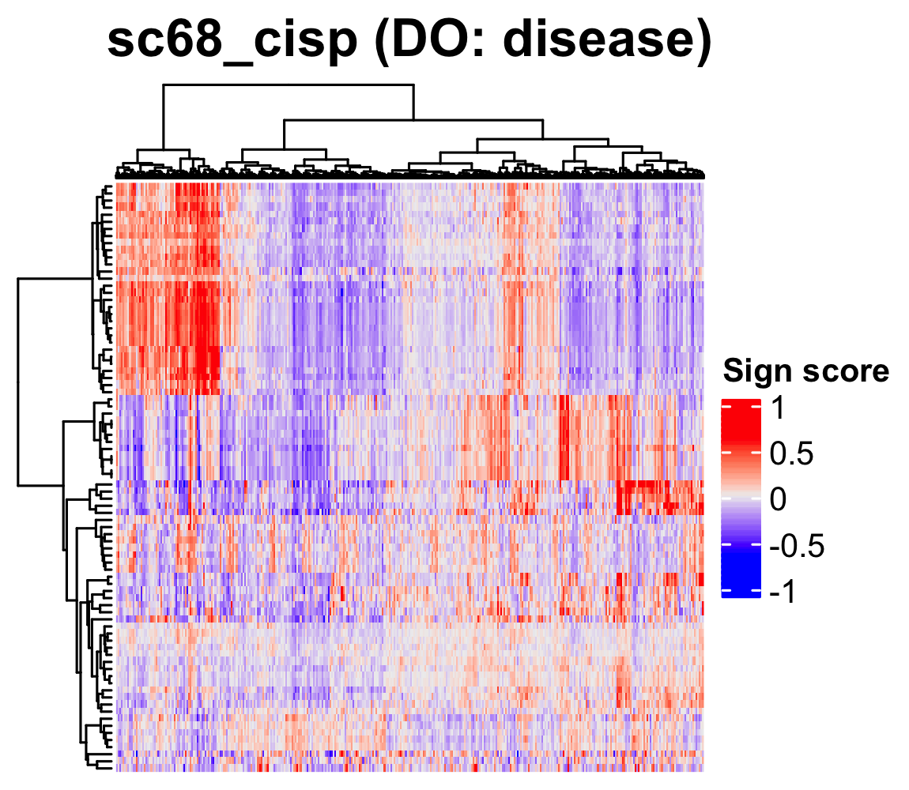
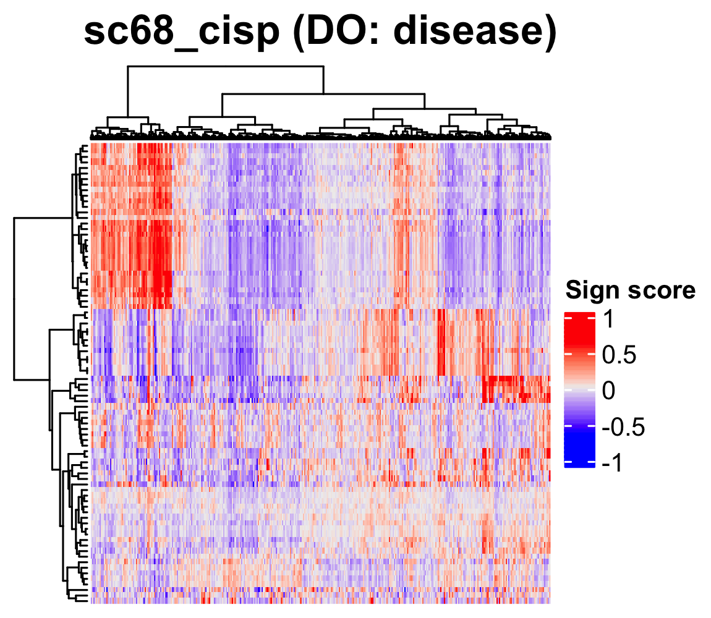

 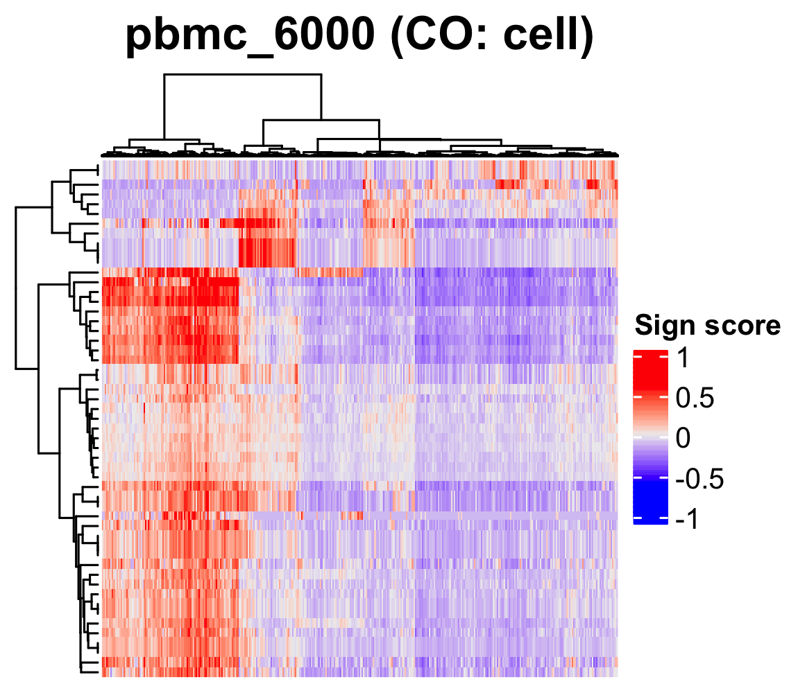
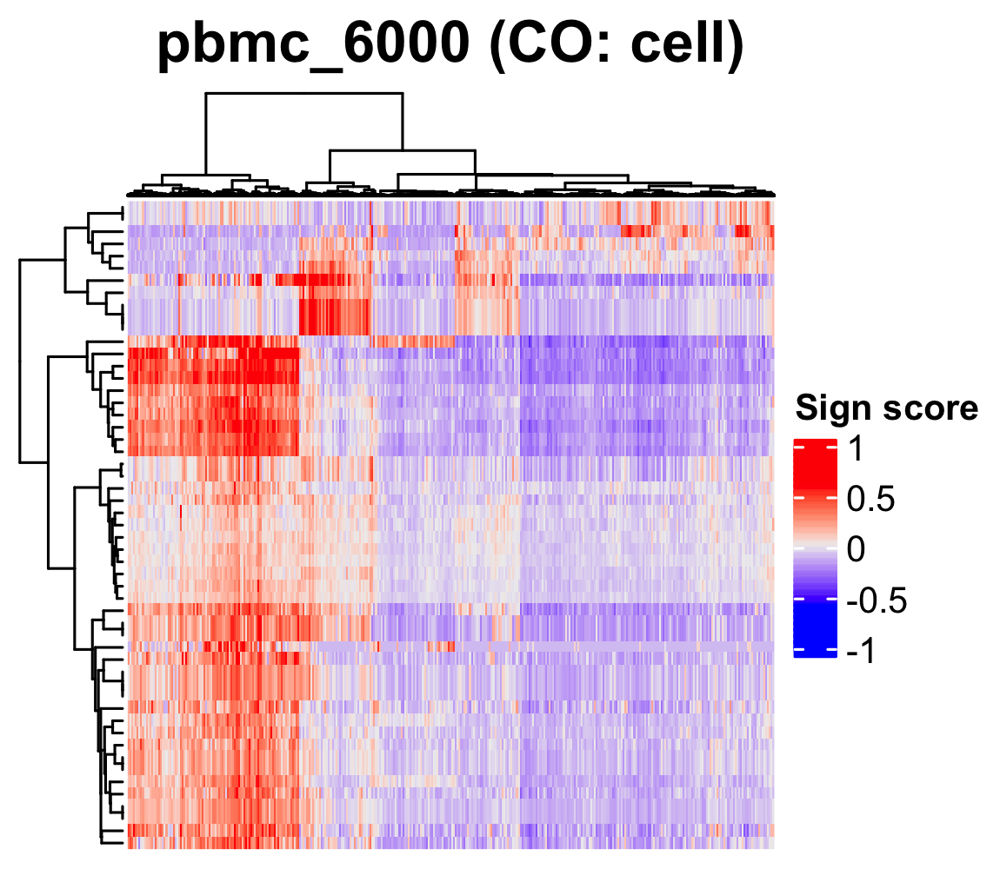
Save the objects.
saveRDS(sc68_vehi_red, file = "backup/01_101_sc68_vehi_matrix_DO.rds")
saveRDS(sc68_cisp_red, file = "backup/02_101_sc68_cisp_matrix_DO.rds")
saveRDS(pdac_aint_red, file = "backup/07_101_pdac_aint_matrix_CB.rds")
saveRDS(pbmc_4000_red, file = "backup/10_101_pbmc_4000_matrix_CO.rds")
saveRDS(pbmc_6000_red, file = "backup/11_101_pbmc_6000_matrix_CO.rds")9.7 Dimensionality reduction
Load the data.
rm(list = ls())
source("R/plot.R")
source("R/function_asurat.R")
sc68_vehi <- readRDS(file = "backup/01_101_sc68_vehi_matrix_DO.rds")
sc68_cisp <- readRDS(file = "backup/02_101_sc68_cisp_matrix_DO.rds")
pdac_aint <- readRDS(file = "backup/07_101_pdac_aint_matrix_CB.rds")
pbmc_4000 <- readRDS(file = "backup/10_101_pbmc_4000_matrix_CO.rds")
pbmc_6000 <- readRDS(file = "backup/11_101_pbmc_6000_matrix_CO.rds")9.7.1 Principal component analysis (optional)
The following function do_pca_sign() performs principal component analysis
based on the sign-by-sample matrices of the input data_type and category.
sc68_vehi <- do_pca_sign(obj = sc68_vehi, data_type = "DO", category ="disease")
sc68_cisp <- do_pca_sign(obj = sc68_cisp, data_type = "DO", category ="disease")
pdac_aint <- do_pca_sign(obj = pdac_aint, data_type = "CB", category = "cell")
pbmc_4000 <- do_pca_sign(obj = pbmc_4000, data_type = "CO", category = "cell")
pbmc_6000 <- do_pca_sign(obj = pbmc_6000, data_type = "CO", category = "cell")The result is stored in obj[["reduction"]][["pca"]][[data_type]][[category]].
9.7.2 t-distributed stochastic neighbor embedding (optional)
The following function do_tsne_sign() performs Rtsne() in Rtsne package
based on the sign-by-sample matrices of the input data_type and category.
The arguments are obj (ASURAT object), data_type, category,
pca_dim (number of principal component used for t-SNE, in which NULL is
accepted if users would like to compute t-SNE from the original sample-by-sign
matrices), and tsne_dim (t-SNE dimension: either 2 or 3).
sc68_vehi <- do_tsne_sign(obj = sc68_vehi, data_type = "DO",
category = "disease", pca_dim = NULL, tsne_dim = 2)
sc68_cisp <- do_tsne_sign(obj = sc68_cisp, data_type = "DO",
category = "disease", pca_dim = NULL, tsne_dim = 2)
pdac_aint <- do_tsne_sign(obj = pdac_aint, data_type = "CB",
category = "cell", pca_dim = NULL, tsne_dim = 2)
pbmc_4000 <- do_tsne_sign(obj = pbmc_4000, data_type = "CO",
category = "cell", pca_dim = NULL, tsne_dim = 2)
pbmc_6000 <- do_tsne_sign(obj = pbmc_6000, data_type = "CO",
category = "cell", pca_dim = NULL, tsne_dim = 2)The result is stored in obj[["reduction"]][["tsne"]][[data_type]][[category]].
9.7.3 Uniform manifold approximation and projection (optional)
The following function do_umap_sign() performs umap() in umap package
based on the sign-by-sample matrices of the input data_type and category.
The arguments are obj, data_type, category,
pca_dim (number of principal component used for UMAP, in which NULL is
accepted if users would like to compute UMAP from the original sample-by-sign
matrices), and umap_dim (UMAP dimension: either 2 or 3).
Tips:
If the resulting diffusion map is distorted by outliers, tuning of pca_dim
will be required.
sc68_vehi <- do_umap_sign(obj = sc68_vehi, data_type = "DO",
category = "disease", pca_dim = NULL, umap_dim = 2)
sc68_cisp <- do_umap_sign(obj = sc68_cisp, data_type = "DO",
category = "disease", pca_dim = NULL, umap_dim = 2)
pdac_aint <- do_umap_sign(obj = pdac_aint, data_type = "CB",
category = "cell", pca_dim = 50, umap_dim = 2)
pbmc_4000 <- do_umap_sign(obj = pbmc_4000, data_type = "CO",
category = "cell", pca_dim = NULL, umap_dim = 2)
pbmc_6000 <- do_umap_sign(obj = pbmc_6000, data_type = "CO",
category = "cell", pca_dim = NULL, umap_dim = 2)The result is stored in obj[["reduction"]][["umap"]][[data_type]][[category]].
9.7.4 Diffusion map (optional)
The following function do_dmap_sign() performs DiffusionMap() in
destiny package, where the arguments are preset as sigma = "local" and
distance = "euclidean".
The arguments are obj, data_type, category, sigma
(argument of DiffusionMap()), distance (argument of DiffusionMap()), and
pca_dim (an integer: number of principal component used for UMAP, in which
NULL is accepted if users would like to compute UMAP from the original
sample-by-sign matrices).
Tips:
If the resulting diffusion map is distorted by outliers, tuning of pca_dim
will be required.
sc68_cisp <- do_dmap_sign(obj = sc68_cisp, data_type = "DO",
category = "disease", pca_dim = NULL)The result is stored in obj[["reduction"]][["dmap"]][[data_type]][[category]].
9.7.5 Visualization
The following functions plot_tsne_sign(), plot_umap_sign(), and
plot_dmap_sign() show sign-by-sample matrices in low dimensional space.
The space dimension is automatically given by tsne_dim used in
do_tsne_sign() for plot_tsne_sign() or umap_dim used in do_umap_sign()
for plot_umap_sign(), while manually given by dims for plot_dmap_sign().
The arguments are obj, data_type, category, algo_name = NULL, dims
(dimension vector for the plot), theta (angle of view), and
phi (angle of view).
# ----------------------------------------
# sc68_vehi
# ----------------------------------------
p <- plot_tsne_sign(obj = sc68_vehi, data_type = "DO", category = "disease",
algo_name = NULL, theta = NULL, phi = NULL,
title = "sc68_vehi (DO: disease)", title_size = 18,
xlabel = "tSNE_1", ylabel = "tSNE_2", zlabel = NULL,
default_color = TRUE)
filename <- "figures/figure_01_0105.png"
ggsave(file = filename, plot = p, dpi = 300, width = 4.3, height = 4.5)

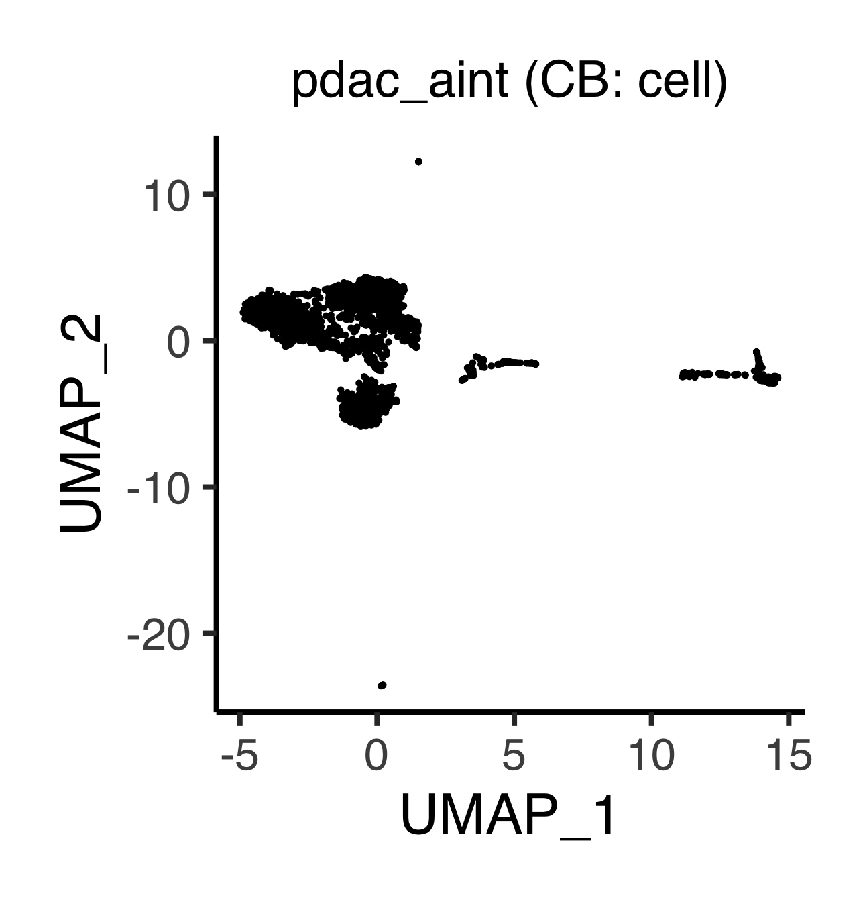


9.7.6 Save results.
Save the objects.
saveRDS(sc68_vehi, file = "backup/01_102_sc68_vehi_reduction_DO.rds")
saveRDS(sc68_cisp, file = "backup/02_102_sc68_cisp_reduction_DO.rds")
saveRDS(pdac_aint, file = "backup/07_102_pdac_aint_reduction_CB.rds")
saveRDS(pbmc_4000, file = "backup/10_102_pbmc_4000_reduction_CO.rds")
saveRDS(pbmc_6000, file = "backup/11_102_pbmc_6000_reduction_CO.rds")9.8 Cell clustering
Load the data.
source("R/plot.R")
source("R/function_asurat.R")
sc68_vehi <- readRDS(file = "backup/01_102_sc68_vehi_reduction_DO.rds")
sc68_cisp <- readRDS(file = "backup/02_102_sc68_cisp_reduction_DO.rds")
pdac_aint <- readRDS(file = "backup/07_102_pdac_aint_reduction_CB.rds")
pbmc_4000 <- readRDS(file = "backup/10_102_pbmc_4000_reduction_CO.rds")
pbmc_6000 <- readRDS(file = "backup/11_102_pbmc_6000_reduction_CO.rds")Here users can choose one of the following unsupervised clustering methods.
9.8.1 Partitioning around medoids (PAM) (optional)
The following function cluster_samples_pam_sign() performs pam() in
cluster package.
The arguments are obj, data_type, category, and k (argument of pam()).
# pbmc_4000 <- cluster_samples_pam_sign(
# obj = pbmc_4000, data_type = "CO",category = "cell", k = 4)
#
# Below is a memo for plotting the result.
#
# mat <- pbmc_4000[["reduction"]][["tsne"]][["CO"]][["cell"]]$Y
# lab <- pbmc_4000[["sample"]][["pam_CO_cell"]]
# col <- rainbow(length(unique(lab)))
# plot(mat, pch=21, bg=col[lab])
# legend("bottomright", legend=unique(sort(lab)), pch=21, pt.bg=col)The results are stored in
obj[["clustering"]][["pam"]][[data_type]][[category]] and
obj[["sample"]][["pam_data_type_category"]].
9.8.2 Hierarchical clustering and cutting tree (optional)
The following function cluster_samples_hclustCutree_sign() performs
hclust() and cutree() in stats package.
The arguments are obj, data_type, category, method
(argument of hclust()) and k (argument of cutree()).
# pbmc_4000 <- cluster_samples_hclustCutree_sign(
# obj = pbmc_4000, data_type = "CO", category = "cell",
# method = "ward.D2", k = 3)
#
# Below is a memo for plotting the result.
#
# mat <- pbmc_4000[["reduction"]][["tsne"]][["CO"]][["cell"]]$Y
# lab <- pbmc_4000[["sample"]][["hclustCutree_CO_cell"]]
# col <- rainbow(length(unique(lab)))
# plot(mat, pch=21, bg=col[lab])
# legend("bottomright", legend=unique(sort(lab)), pch=21, pt.bg=col)The results are stored in
obj[["clustering"]][["hclustCutree"]][[data_type]][[category]] and
obj[["sample"]][["hclustCutree_data_type_category"]].
9.8.3 Community detection algorithm with k-nearest neighbor (KNN) graph (optional)
The following function cluster_samples_seuratFindClusters_sign() performs
CreateSeuratObject(), ScaleData(), RunPCA(), FindNeighbors(), and
FindClusters() in Seurat package.
The arguments are obj, data_type, category, reduction, dims,
k.param, prune.SNN, resolution, and algorithm, where the latter six
parameters are used in FindNeighbors() and FindClusters().
sc68_vehi <- cluster_samples_seuratFindClusters_sign(
obj = sc68_vehi, data_type = "DO", category = "disease", reduction = "pca",
dims = 1:20, k.param = 10, prune.SNN = 1./15, resolution = 0.20,
algorithm = 1)
pdac_aint <- cluster_samples_seuratFindClusters_sign(
obj = pdac_aint, data_type = "CB", category = "cell", reduction = "pca",
dims = 1:50, k.param = 10, prune.SNN = 1./15, resolution = 0.20,
algorithm = 1)
pbmc_4000 <- cluster_samples_seuratFindClusters_sign(
obj = pbmc_4000, data_type = "CO", category = "cell", reduction = "pca",
dims = 1:20, k.param = 10, prune.SNN = 1./15, resolution = 0.15,
algorithm = 1)
pbmc_6000 <- cluster_samples_seuratFindClusters_sign(
obj = pbmc_6000, data_type = "CO", category = "cell", reduction = "pca",
dims = 1:20, k.param = 10, prune.SNN = 1./15, resolution = 0.16,
algorithm = 1)
#
# Below is a memo for plotting the result.
#
# mat <- pdac_aint[["reduction"]][["umap"]][["CB"]][["cell"]][["layout"]]
# lab <- pdac_aint[["sample"]][["seuratFindClusters_CB_cell"]]
# col <- rainbow(length(unique(lab)))
# plot(mat, pch=21, bg=col[lab])
# legend("bottomright", legend=unique(sort(lab)), pch=21, pt.bg=col)The results are stored in
obj[["sample"]][["seuratFindClusters_data_type_category"]] and
obj[["clustering"]][["seuratFindClusters"]][[data_type]][[category]].
9.8.4 Clustering by branch detection along pseudotime (optional)
The following function do_CalculateScaffoldTree_dmap() computes a scaffold
tree by using CalculateScaffoldTree() in merlot package, which is based on
the result of diffusion map.
The arguments are obj, data_type, category, dims (dimensions of the
diffusion map: only two or three dimensional vector is accepted), NEndpoints
(number of end points of the scaffold tree), and random_seed (random seed to
be passed on to Python to ensure reproducibility).
sc68_cisp <- do_CalculateScaffoldTree_dmap(
obj = sc68_cisp, data_type = "DO", category = "disease",
dims = 1:3, NEndpoints = 3, random_seed = 8)The results are stored in
obj[["clustering"]][["merlot"]][[data_type]][[category]][["ScaffoldTree"]].
The following function do_CalculateElasticTree_dmap() computes an elastic
principal tree by using CalculateElasticTree() in merlot package,
which is based on the result of two-dimensional diffusion map.
The arguments are obj, data_type, category, and N_yk
(number of support nodes).
sc68_cisp <- do_CalculateElasticTree_dmap(
obj = sc68_cisp, data_type = "DO", category = "disease", N_yk = 30)The results are stored in
obj[["clustering"]][["merlot"]][[data_type]][[category]][["ElasticTree"]].
The following function plot_ElasticTree_dmap() visualizes the result of
do_CalculateElasticTree_dmap().
# ----------------------------------------
# sc68_cisp
# ----------------------------------------
filename <- "figures/figure_02_0115.png"
png(file = filename, height = 1400, width = 1400, res = 300)
plot_ElasticTree_dmap(obj = sc68_cisp, data_type = "DO", category = "disease",
theta = 0, phi = 30,
title = "sc68_cisp (DO: disease)", title_size = 1.2,
xlabel = "DC_1", ylabel = "DC_2", zlabel = "DC_3",
default_color = TRUE)
dev.off()
The following function do_SignSpaceEmbedding_dmap() embeds the elastic
principal tree into the original space spanned by the row vectors of
sign-by-sample matrices by using GenesSpaceEmbedding() in merlot package,
in which Gene is read as Sign here.
sc68_cisp <- do_SignSpaceEmbedding_dmap(
obj = sc68_cisp, data_type = "DO", category = "disease")The results are stored in
obj[["clustering"]][["merlot"]][[data_type]][[category]][["EmbeddedTree"]].
The following function do_CalculatePseudotimes_dmap() computes a pseudotime
for each cell by using CalculatePseudotimes() in merlot package.
The arguments are obj, data_type, category, and T0 (endpoint used at
time zero).
sc68_cisp <- do_CalculatePseudotimes_dmap(
obj = sc68_cisp, data_type = "DO", category = "disease", T0 = 1)The results are stored in
obj[["cluster"]][["merlot"]][[data_type]][[category]][["Pseudotimes"]].
The following function plot_Pseudotime_dmap() shows the result of
do_CalculatePseudotimes_dmap() in a two dimensional space.
# ----------------------------------------
# sc68_cisp
# ----------------------------------------
filename <- "figures/figure_02_0120.png"
png(file = filename, height = 1400, width = 1400, res = 300)
plot_Pseudotime_dmap(obj = sc68_cisp, data_type = "DO", category = "disease",
theta = 0, phi = 30,
title = "sc68_cisp (DO: disease)", title_size = 1.2,
xlabel = "DC_1", ylabel = "DC_2", zlabel = "DC_3")
dev.off()
The following function cluster_samples_merlot_sign() clusters samples
according to the labels of branches.
sc68_cisp <- cluster_samples_merlot_sign(
obj = sc68_cisp, data_type = "DO", category = "disease")The result is stored in obj[["sample"]][["merlot_DO_disease"]].
9.8.5 Save data
Save the objects.
saveRDS(sc68_vehi, file = "backup/01_103_sc68_vehi_clustering_DO.rds")
saveRDS(sc68_cisp, file = "backup/02_103_sc68_cisp_clustering_DO.rds")
saveRDS(pdac_aint, file = "backup/07_103_pdac_aint_clustering_CB.rds")
saveRDS(pbmc_4000, file = "backup/10_103_pbmc_4000_clustering_CO.rds")
saveRDS(pbmc_6000, file = "backup/11_103_pbmc_6000_clustering_CO.rds")Load the data.
sc68_vehi <- readRDS(file = "backup/01_103_sc68_vehi_clustering_DO.rds")
sc68_cisp <- readRDS(file = "backup/02_103_sc68_cisp_clustering_DO.rds")
pdac_aint <- readRDS(file = "backup/07_103_pdac_aint_clustering_CB.rds")
pbmc_4000 <- readRDS(file = "backup/10_103_pbmc_4000_clustering_CO.rds")
pbmc_6000 <- readRDS(file = "backup/11_103_pbmc_6000_clustering_CO.rds")9.9 Visualize clustering results
In this subsection, the clustering results are visualized.
The following function plot_Heatmap_SignxSamp() visualizes the result of
sample clustering by identifying algo_name (in the current version,
one of "pam", "hclustCutree", "seuratFindClusters", and "merlot").
# ----------------------------------------
# sc68_vehi
# ----------------------------------------
filename <- "figures/figure_01_0130.png"
png(file = filename, height = 1000, width = 1400, res = 300)
plot_Heatmap_SignxSamp(obj = sc68_vehi, data_type = "DO", category = "disease",
algo_name = "seuratFindClusters", method = "ward.D2",
show_nReads = FALSE, title = "sc68_vehi (DO: disease)",
name = "Sign score",
show_rownames_sign = FALSE, show_rownames_label = FALSE,
show_rownames_nReads = FALSE, default_color = TRUE)
dev.off()


 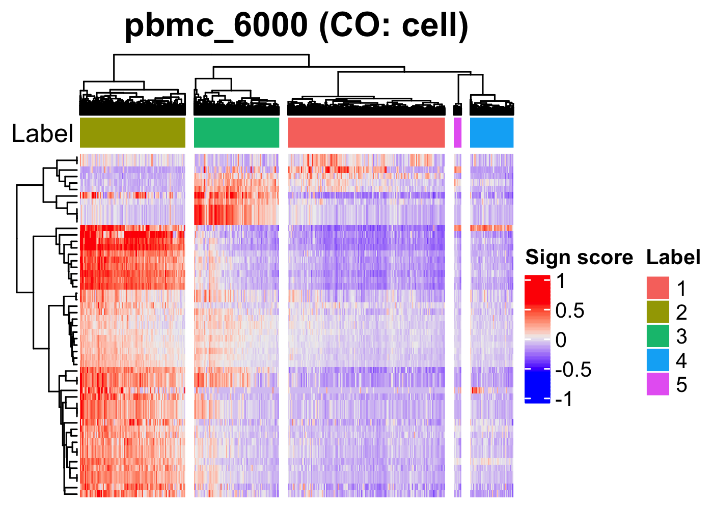
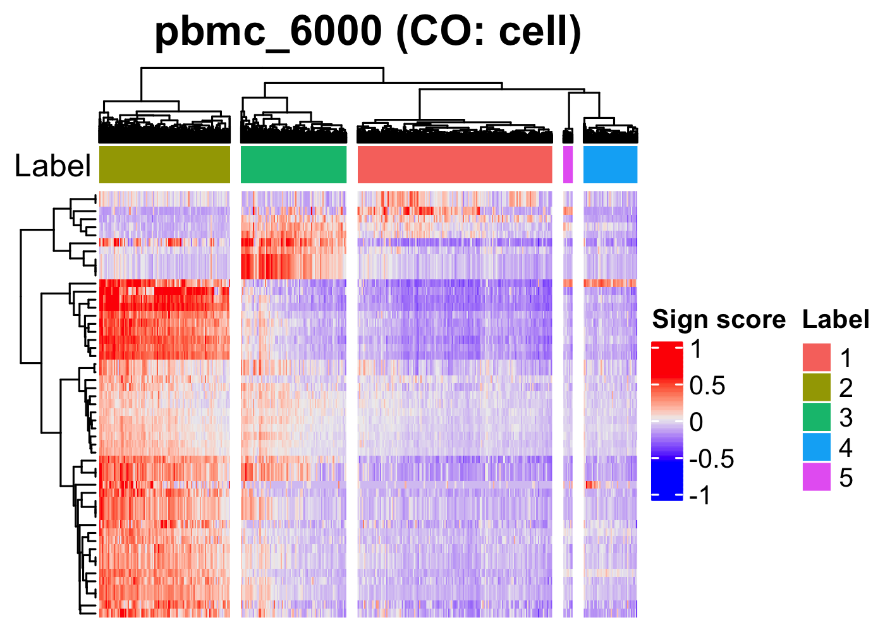
# ----------------------------------------
# sc68_vehi
# ----------------------------------------
p <- plot_tsne_sign(obj = sc68_vehi, data_type = "DO", category = "disease",
algo_name = "seuratFindClusters",
theta = NULL, phi = NULL,
title = "sc68_vehi (DO: disease)", title_size = 16,
xlabel = "DC_1", ylabel = "DC_2", zlabel = NULL,
default_color = TRUE)
filename <- "figures/figure_01_0131.png"
ggsave(file = filename, plot = p, dpi = 300, width = 4.8, height = 4)


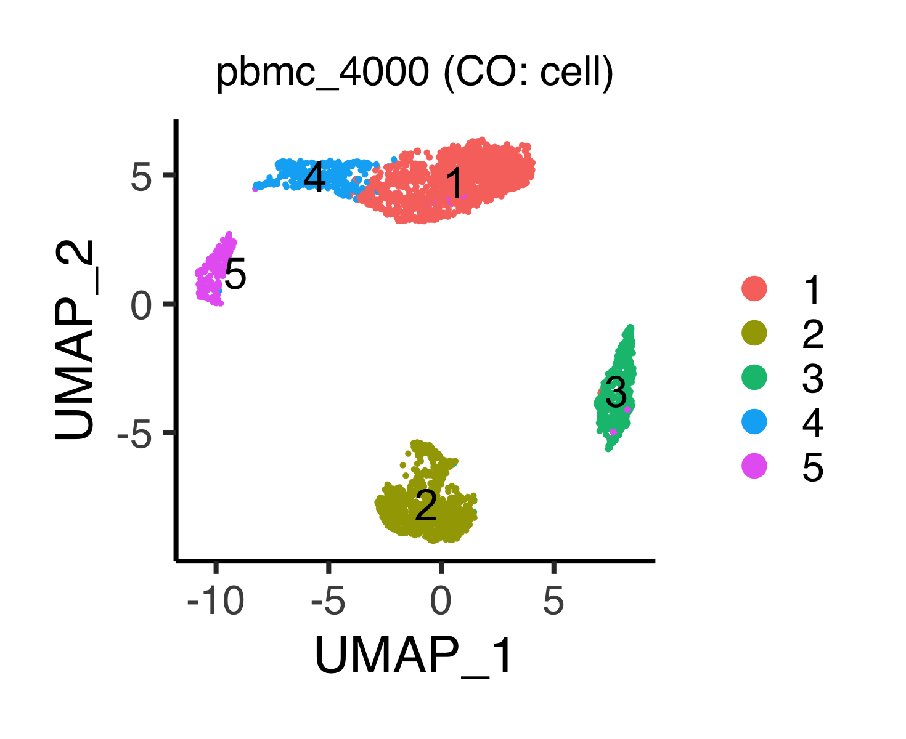

The following command shows the number of cells per cluster visualized using bar graph.
# ----------------------------------------
# sc68_vehi
# ----------------------------------------
p <- plot_bargraph_sign(obj = sc68_vehi, data_type = "DO", category = "disease",
algo_name = "seuratFindClusters",
title = "sc68_vehi", title_size = 20,
xlabel = "Label (DO: disease)",
ylabel = "Number of samples", ymax = 4000)
filename <- "figures/figure_01_0135.png"
ggsave(file = filename, plot = p, dpi = 300, width = 4.3, height = 4)

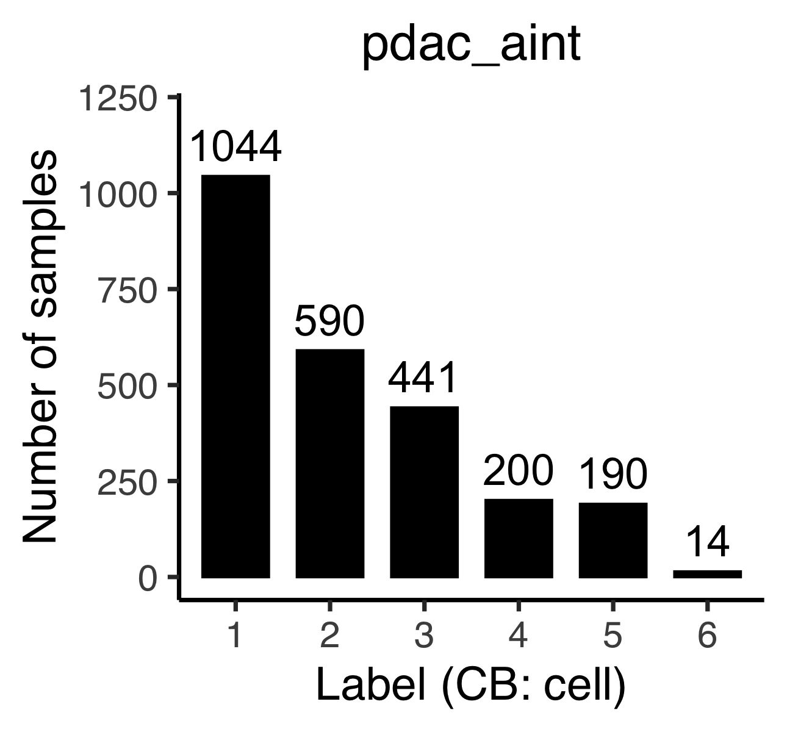


9.10 Find significant signs
9.10.1 Compute separation indices
In this subsection, signs with sign scores being specifically upregulated in some cluster are detected by computing the separation indices (sep_I), i.e., non-parametric measure of degree in separation of two random variable sets (see our paper for the definition). The concept of significant sign is similar to that of differentially expressed genes (DEGs).
Load the data.
source("R/plot.R")
source("R/function_asurat.R")
sc68_vehi <- readRDS(file = "backup/01_103_sc68_vehi_clustering_DO.rds")
sc68_cisp <- readRDS(file = "backup/02_103_sc68_cisp_clustering_DO.rds")
pdac_aint <- readRDS(file = "backup/07_103_pdac_aint_clustering_CB.rds")
pbmc_4000 <- readRDS(file = "backup/10_103_pbmc_4000_clustering_CO.rds")
pbmc_6000 <- readRDS(file = "backup/11_103_pbmc_6000_clustering_CO.rds")The following function auto_find_marker_sign() computes separation indices
of signs of interest for each subpopulation.
The arguments are obj,
data_type_for_label (data_type used for sample clustering),
category_for_label (category used for sample clustering),
algo_name_for_label (algo_name used for sample clustering),
data_type_for_expr (data_type that the signs of interest belong to),
category_for_expr (category that the signs of interest belong to).
This function helps users find positive and negative marker signs of label_1
with the positive and negative values of the indices, respectively.
sc68_vehi <- auto_find_marker_sign(obj = sc68_vehi, data_type_for_label = "DO",
category_for_label = "disease",
algo_name_for_label = "seuratFindClusters",
data_type_for_expr = "DO",
category_for_expr = "disease")
sc68_cisp <- auto_find_marker_sign(obj = sc68_cisp, data_type_for_label = "DO",
category_for_label = "disease",
algo_name_for_label = "merlot",
data_type_for_expr = "DO",
category_for_expr = "disease")
pdac_aint <- auto_find_marker_sign(obj = pdac_aint, data_type_for_label = "CB",
category_for_label = "cell",
algo_name_for_label = "seuratFindClusters",
data_type_for_expr = "CB",
category_for_expr = "cell")
pbmc_4000 <- auto_find_marker_sign(obj = pbmc_4000, data_type_for_label = "CO",
category_for_label = "cell",
algo_name_for_label = "seuratFindClusters",
data_type_for_expr = "CO",
category_for_expr = "cell")
pbmc_6000 <- auto_find_marker_sign(obj = pbmc_6000, data_type_for_label = "CO",
category_for_label = "cell",
algo_name_for_label = "seuratFindClusters",
data_type_for_expr = "CO",
category_for_expr = "cell")The results are stored in
obj[["marker"]][[data_type_for_expr]][[category_for_expr]].
Here sep_I stands for separation indices of signs, which quantifies the
extent of separation between two different sets of random variables.
Note that auto_find_marker_sign() computes sep_I for a given group versus
all other cells.
On the other hand, to compute sep_I for given two groups, e.g.,
groups 1 versus 2, run function find_marker_sign() as follows:
sc68_cisp <- find_marker_sign(obj = sc68_cisp, data_type_for_label = "DO",
category_for_label = "disease",
algo_name_for_label = "merlot",
data_type_for_expr = "DO",
category_for_expr = "disease",
labels_1 = 1, labels_2 = 2)The results are stored in
obj[["marker"]][[data_type_for_expr]][[category_for_expr]] such as
obj[["marker"]][["DO"]][["disease"]][["Label_DO_disease_1_vs_2"]].
To detect differentially expressed genes, users can use our similar functions
find_marker_gene() and auto_find_marker_gene(), which perform multiple
statistical tests for comparing two groups using normalized read counts, i.e.,
obj[["data"]][["normalized"]].
The arguments of find_marker_gene() are obj, data_type_for_label,
category_for_label, algo_name_for_label, labels_1, labels_2, and
parametric (TRUE or FALSE for t.test() or wilcox.exact(), resp.).
The arguments of auto_find_marker_gene() are obj, data_type_for_label,
category_for_label, algo_name_for_label, and parametric
(TRUE or FALSE for t.test() or wilcox.exact(), resp.).
For example,
sc68_cisp <- auto_find_marker_gene(obj = sc68_cisp, data_type_for_label = "DO",
category_for_label = "disease",
algo_name_for_label = "merlot",
parametric = FALSE)The results are stored in
obj[["marker"]][["gene"]][[data_type_for_expr]][[category_for_expr]].
datatable(sc68_vehi[["marker"]][["DO"]][["disease"]][["all"]], rownames = FALSE)
datatable(sc68_cisp[["marker"]][["DO"]][["disease"]][["all"]], rownames = FALSE)
datatable(pdac_aint[["marker"]][["CB"]][["cell"]][["all"]], rownames = FALSE)
datatable(pbmc_4000[["marker"]][["CO"]][["cell"]][["all"]], rownames = FALSE)
datatable(pbmc_6000[["marker"]][["CO"]][["cell"]][["all"]], rownames = FALSE)sc68_vehi
sc68_cisp
pdac_aint
pbmc_4000
pbmc_6000
Save the objects.
saveRDS(sc68_vehi, file = "backup/01_104_sc68_vehi_DES_DO.rds")
saveRDS(sc68_cisp, file = "backup/02_104_sc68_cisp_DES_DO.rds")
saveRDS(pdac_aint, file = "backup/07_104_pdac_aint_DES_CB.rds")
saveRDS(pbmc_4000, file = "backup/10_104_pbmc_4000_DES_CO.rds")
saveRDS(pbmc_6000, file = "backup/11_104_pbmc_6000_DES_CO.rds")Load the data.
sc68_vehi <- readRDS(file = "backup/01_104_sc68_vehi_DES_DO.rds")
sc68_cisp <- readRDS(file = "backup/02_104_sc68_cisp_DES_DO.rds")
pdac_aint <- readRDS(file = "backup/07_104_pdac_aint_DES_CB.rds")
pbmc_4000 <- readRDS(file = "backup/10_104_pbmc_4000_DES_CO.rds")
pbmc_6000 <- readRDS(file = "backup/11_104_pbmc_6000_DES_CO.rds")9.10.2 Investigate sign scores
The following function plot_violin_signScore() shows distribution of
sign scores across all the clusters by violin plots.
The arguments are obj, sign_name (sign ID),
data_type_for_label (data_type used for sample clustering),
category_for_label (category used for sample clustering),
algo_name_for_label (algo_name used for sample clustering),
data_type_for_expr (data_type that the signs of interest belong to),
category_for_expr (category that the signs of interest belong to).
# ----------------------------------------
# sc68_vehi
# ----------------------------------------
p <- plot_violin_signScore(
obj = sc68_vehi, sign_name = "DOID:5409_S",
data_type_for_label = "DO", category_for_label = "disease",
algo_name_for_label = "seuratFindClusters",
data_type_for_expr = "DO", category_for_expr = "disease",
title = "DOID:5409_S\nLung small cell carcinoma\n(ASCL1/GRP/..)",
title_size = 16, default_color = TRUE)
filename <- "figures/figure_01_0140.png"
ggsave(file = filename, plot = p, dpi = 300, width = 4, height = 4)sc68_vehi


sc68_cisp


pdac_aint
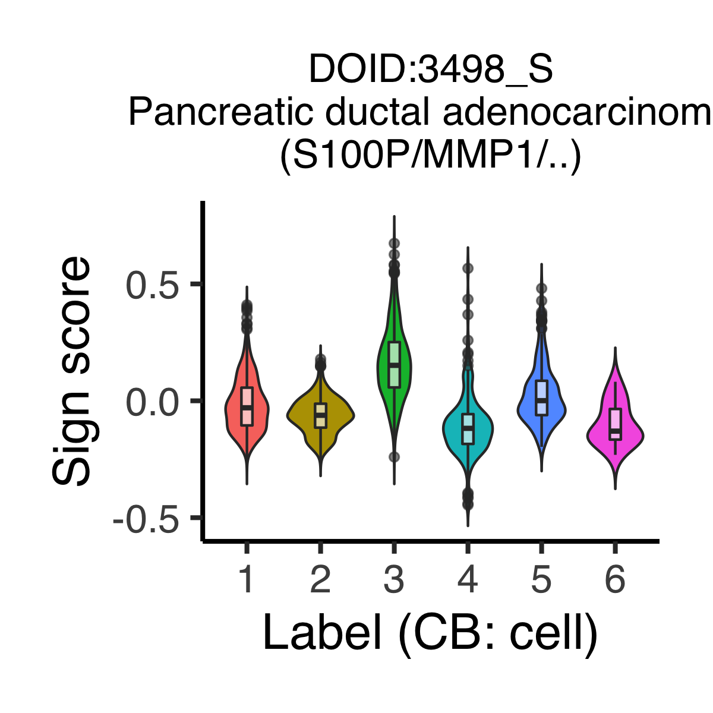

pbmc_4000
 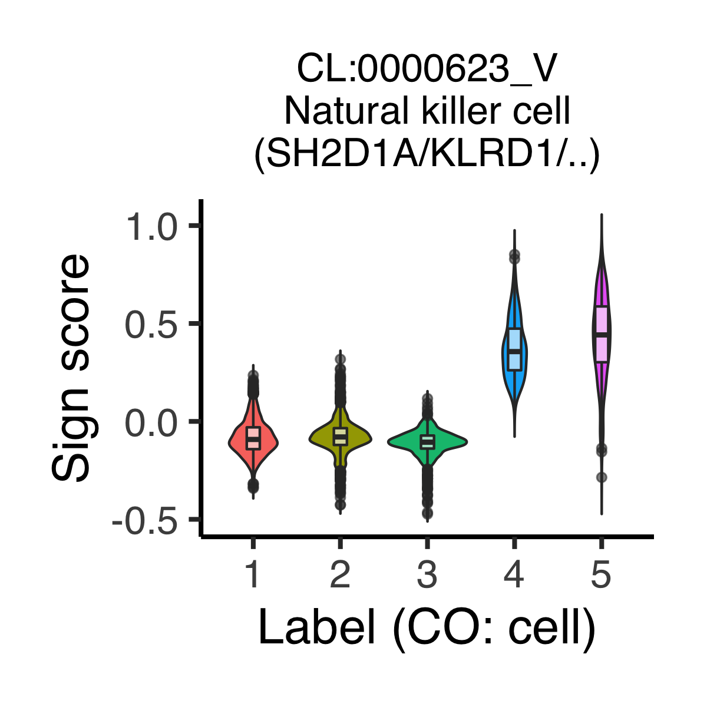
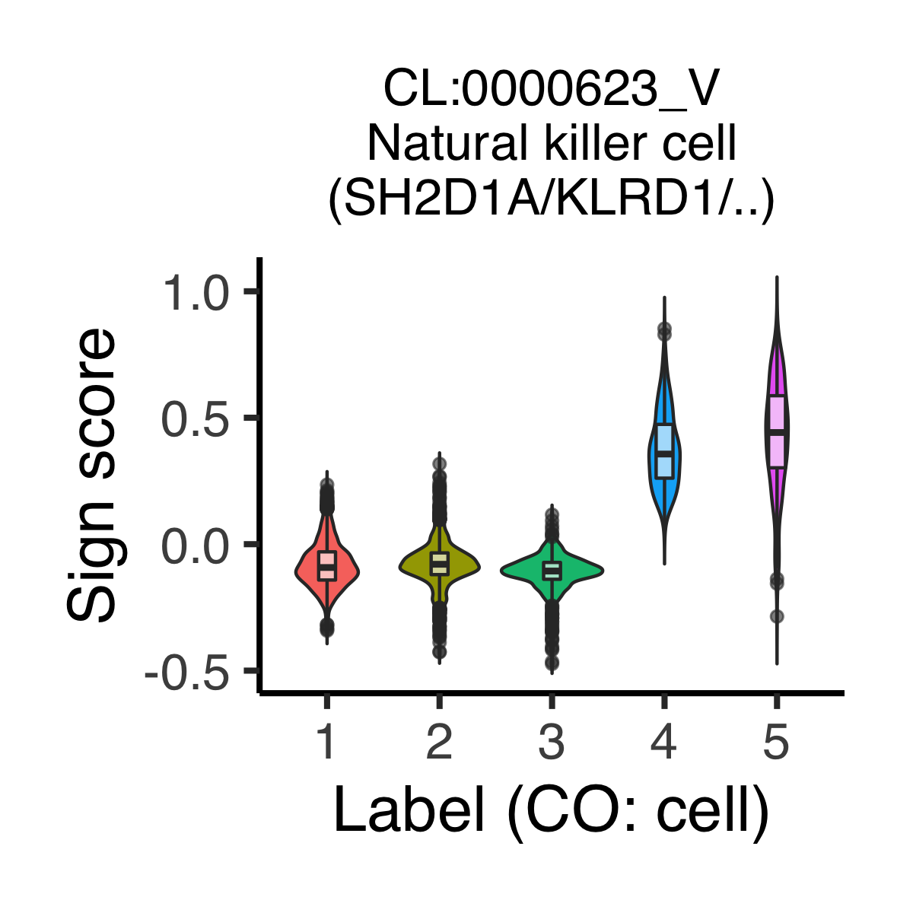

pbmc_6000
 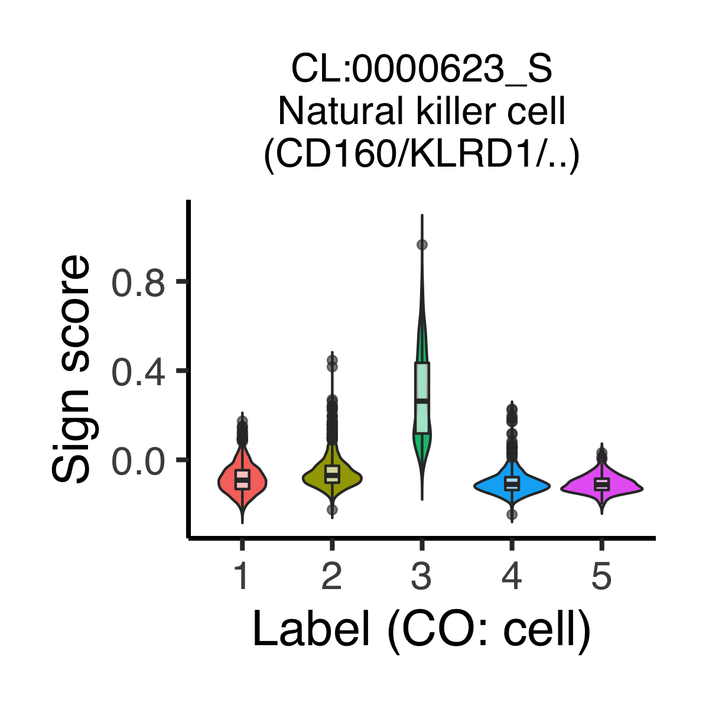
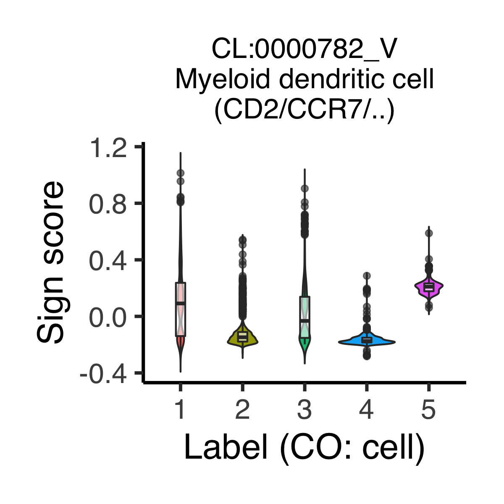
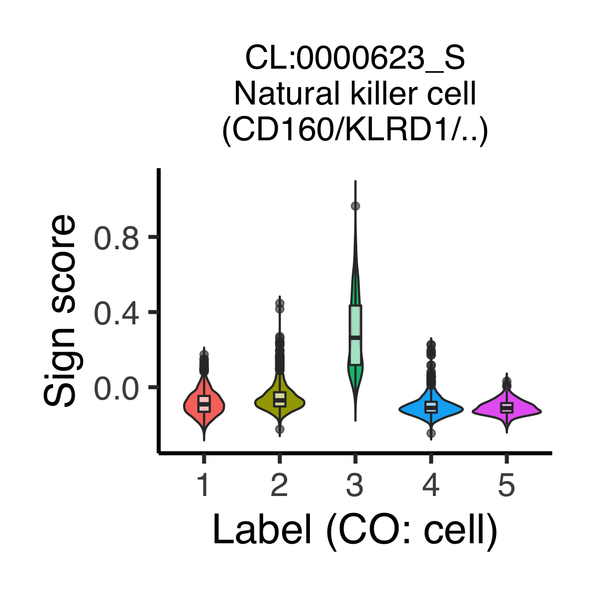
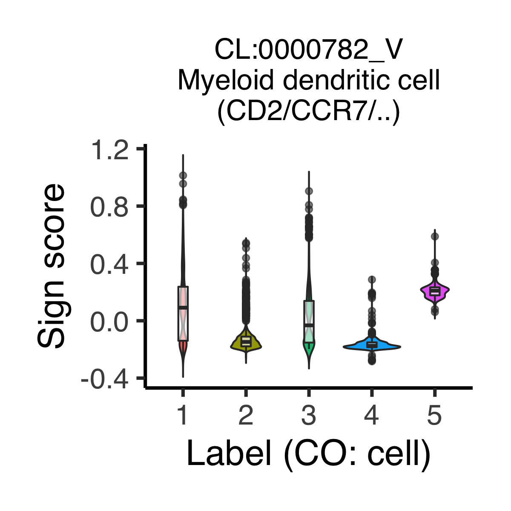
The functions plot_tsne_signScore(), plot_umap_signScore(), and
plot_dmap_signScore() show sign scores of a given sign on t-SNE, UMAP, and
diffusion map spaces, respectively.
The arguments are obj, sign_name (sign ID),
data_type_for_label (data_type used for sample clustering),
category_for_label (category used for sample clustering),
data_type_for_expr (data_type that the signs of interest belong to),
category_for_expr (category that the signs of interest belong to).
# ----------------------------------------
# sc68_vehi
# ----------------------------------------
p <- plot_tsne_signScore(
obj = sc68_vehi, sign_name = "DOID:5409_V",
data_type_for_tsne = "DO", category_for_tsne = "disease",
data_type_for_expr = "DO", category_for_expr = "disease",
theta = NULL, phi = NULL,
title = "DOID:5409_V\nLung small cell carcinoma\n(MKI67/BIRC5/..)",
title_size = 16, label_name = "Sign score",
xlabel = "tSNE_1", ylabel = "tSNE_2", zlabel = NULL)
filename <- "figures/figure_01_0150.png"
ggsave(file = filename, plot = p, dpi = 300, width = 5.6, height = 4.4)sc68_vehi

sc68_cisp


pdac_aint
 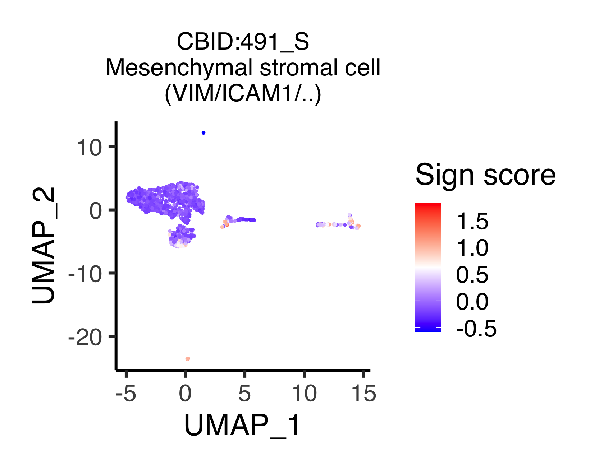
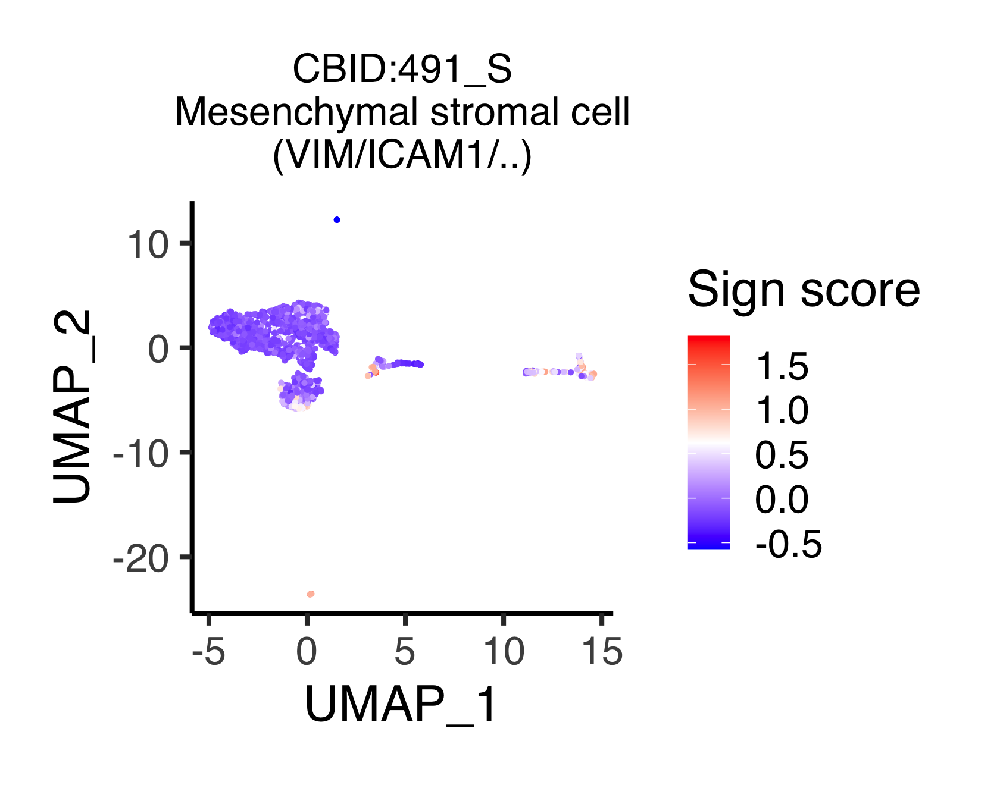
pbmc_4000


pbmc_6000


The functions plot_tsne_geneExpression(), plot_umap_geneExpression(), and
plot_dmap_geneExpression() show normalized gene expression levels
(if zscore = TRUE, the expression levels are converted into z-score) for
input genes (gene_names) on low dimensional space.
Note that if gene_names has more than one gene, the expression levels are
shown as the average of them.
# ----------------------------------------
# sc68_vehi
# ----------------------------------------
p <- plot_tsne_geneExpression(
obj = sc68_vehi, gene_names = c("ASCL1"), zscore = FALSE,
data_type_for_tsne = "DO", category_for_tsne = "disease",
theta = NULL, phi = NULL,
title = "sc68_vehi (DO: disease)", title_size = 16,
label_name = "ASCL1",
xlabel = "tSNE_1", ylabel = "tSNE_2", zlabel = NULL)
filename <- "figures/figure_01_0160.png"
ggsave(file = filename, plot = p, dpi = 300, width = 5.4, height = 4)sc68_vehi
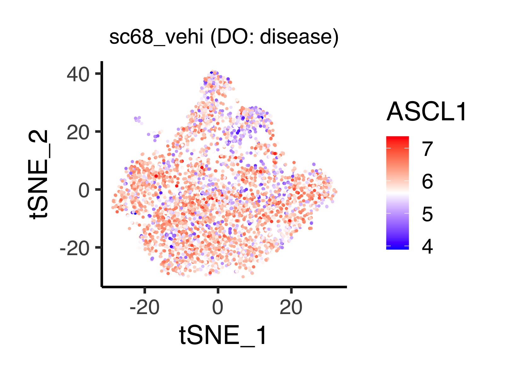 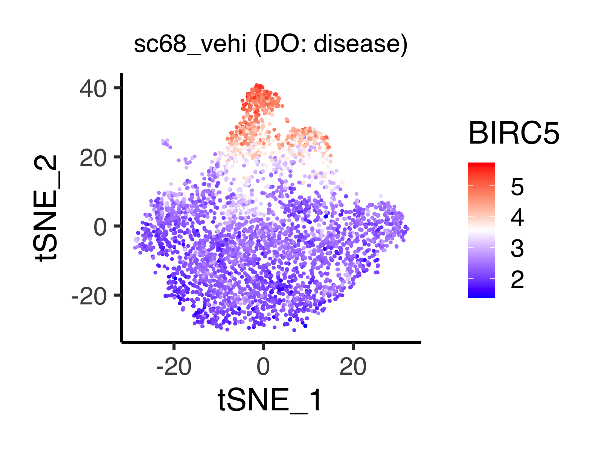
sc68_cisp


pdac_aint


pbmc_4000

pbmc_6000


The following function plot_pseudotime_vs_signscore() plots sign scores
versus pseudotime for a given sign, in which filled circles, bold lines,
and the shade regions stand for the expression values of samples, mean
expression levels, and standard deviations (this value is 0 if there are less
than three samples), respectively.
The arguments data_type_for_tree and category_for_tree are the data type
and category used for the branch-based clustering of cells (i.e., the
labels assigned to the branches), while data_type_for_expr and
category_for_expr for sign scores of signs of interest.
# ----------------------------------------
# sc68_cisp
# ----------------------------------------
p <- plot_pseudotime_vs_signscore(
obj = sc68_cisp, sign_name = "DOID:5409_S",
data_type_for_tree = "DO", category_for_tree = "disease",
data_type_for_expr = "DO", category_for_expr = "disease",
title = "DOID:5409_S\nLung small cell carcinoma\n(ASCL1/GRP/..)",
title_size = 22,
label_name = "Label\n(DO: disease)",
xlabel = "Pseudotime (DO: disease)", ylabel = "Sign score")
filename <- "figures/figure_02_0170.png"
ggsave(file = filename, plot = p, dpi = 300, width = 7.5, height = 5)sc68_cisp


9.11 Investigate batch effects
Load the data.
source("R/plot.R")
pdac_aint <- readRDS(file = "backup/07_104_pdac_aint_DES_CB.rds")The following function plot_manifold_sign() outputs a ggplot object,
which shows the clustering results between batches or putative subpopulations
in a two-dimensional reduced space.
The arguments are obj_seurat (Seurat object), batch (TRUE or FALSE:
if TRUE, the batch information is labeled, otherwise inferred clusters are
labeled), plot_type (one of "tsne", "umap", or "dmap"),
data_type, category, and algo_name.
# ----------------------------------------
# pdac_aint
# ----------------------------------------
p <- plot_manifold_sign(obj = pdac_aint, batch = TRUE,
plot_type = "umap",
data_type = "CB", category = "cell",
algo_name = "seuratFindClusters",
title = "pdac_aint", title_size = 18,
xlabel = "UMAP_1", ylabel = "UMAP_2",
default_color = TRUE)
filename <- "figures/figure_07_0180.png"
ggsave(file = filename, plot = p, dpi = 300, width = 5.3, height = 4)
p <- plot_manifold_sign(obj = pdac_aint, batch = FALSE,
plot_type = "umap",
data_type = "CB", category = "cell",
algo_name = "seuratFindClusters",
title = "pdac_aint",
title_size = 18, xlabel = "UMAP_1", ylabel = "UMAP_2",
default_color = TRUE)
filename <- "figures/figure_07_0181.png"
ggsave(file = filename, plot = p, dpi = 300, width = 4.7, height = 4)

9.12 Spatial mapping by Spaniel
Load the data.
pdac_aint <- readRDS(file = "backup/07_104_pdac_aint_DES_CB.rds")
pdac_ast1 <- readRDS(file = "backup/05_005_pdac_ast1_normalized.rds")
fn <- "data/2020_001_Moncada/pdac_ast1/tissue_positions_list_spatial_object.tsv"Create a Seurat object keeping only ST spots in integrated data pdac_aint.
# ----------------------------------------
# pdac_aint
# ----------------------------------------
tmp <- pdac_aint[["sample"]]
tmp <- tmp[which(tmp$orig_ident == "ST"),]
pdac_aint[["sample"]] <- tmp
mat <- pdac_aint[["sign"]][["CBxSample"]][["cell"]]
tmp <- pdac_aint[["sample"]][["barcode"]]
mat <- mat[, which(colnames(mat) %in% tmp)]
colnames(mat) <- pdac_ast1[["sample"]][["spot"]] # This is required by Spaniel
# ----------------------------------------
# se
# ----------------------------------------
se <- Spaniel::createSeurat(counts = mat, barcodeFile = fn,
projectName = "PDAC-A", sectionNumber = "1")
se@images <- pdac_aint[["misc"]][["images"]]Pre-processing.
tmp <- pdac_aint[["sample"]][["seuratFindClusters_CB_cell"]]
se@meta.data[["cluster"]] <- tmp
SetIdent(se, value = "cluster")
se <- ScaleData(se)Visualize clusters on tissue images.
p <- spanielPlot(object = se, grob = se@images[[1]], plotType = "Cluster",
clusterRes = "cluster", ptSize = 2.5,
customTitle = "Cluster (CB: cell)")
filename <- "figures/figure_07_0190.png"
ggsave(file = filename, plot = p, dpi = 300, width = 5.1, height = 4.2)
Visualize sign scores on histological images.
Note that in se underscores "_" were replaced with hyphens “-”.
p <- spanielPlot(object = se, grob = se@images[[1]], plotType = "Gene",
gene = "DOID:3498-S", ptSizeMax = 2.5, ptSizeMin = 0,
customTitle = "DOID:3498_S")
filename <- "figures/figure_07_0195.png"
ggsave(file = filename, plot = p, dpi = 300, width = 4.7, height = 4.1)- DOID:3498_S pancreatic ductal adenocarcinoma (S100P/MMP1/..)